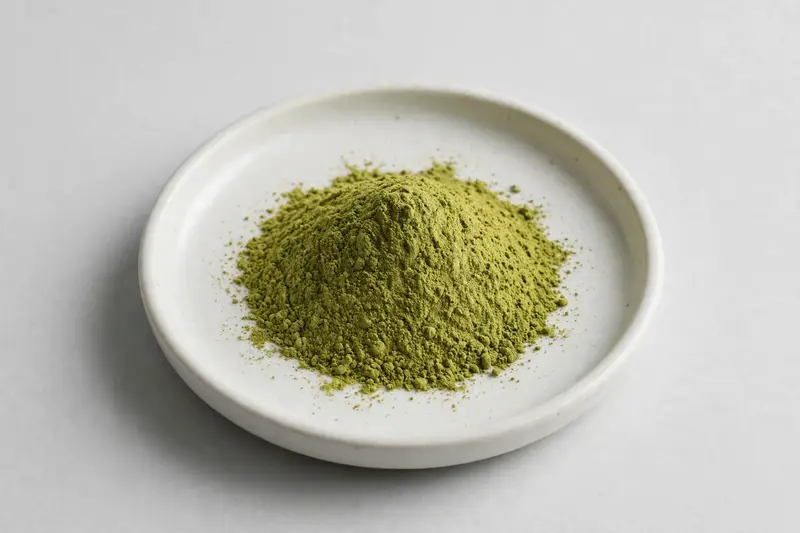

Barley grass — young-leaf green powder for greens and wellness-blend formulations.

Overview
Barley grass powder comes from the young leaf of Hordeum vulgare, harvested before the plant matures and processed into either juice powder or whole-leaf powder. Buyers often specify chlorophyll content and, for juice grades, SOD activity as a distinguishing marker for premium wellness positioning. It is a staple of the greens-powder category and appears in capsule, sachet and bulk blend formats. We source through vetted partner producers and confirm feasibility against your target spec.
Specifications below reflect commonly requested options in the market — not a stock list. Share your target spec and we'll confirm exactly what we can supply, honestly.
| Specification | Details |
|---|---|
| Botanical identity | Barley grass powder (young leaf) |
| Source material | Young leaf |
| Marker compound | Commonly requested spec grades: juice powder vs whole leaf; chlorophyll and SOD activity agreed per buyer method |
| Appearance | Bright olive-green fine powder |
| Mesh size | Typically 80–100 mesh (confirm per inquiry) |
| Testing | COA/TDS arranged on request; scope agreed per your spec |
Applications
Documentation
We don't claim in-house labs or certifications we don't hold. COA and TDS documents can be arranged on request, and testing scope is agreed against your specification before supply.
FAQ
Related products
Panax ginseng
Key marker: Ginsenosides
View specs →Curcuma longa
Key marker: Curcuminoids
View specs →Nattokinase (fermented soybean enzyme)
Key marker: 20,000-40,000 FU/g
View specs →Amaranthus hypochondriacus
Key marker: Squalene
View specs →Nelumbo nucifera
Key marker: Total Alkaloids / Flavonoids
View specs →Buyer guides
Buyer’s guide
Identity, actives, heavy metals, micro — what each section of a Certificate of Analysis means, and the red flags that tell you to walk away.
Read the guide →Buyer’s guide
Section-by-section COA walkthrough — marker assays, heavy metals, micro panels, red flags, and a buyer checklist.
Read the guide →Send your target spec and volumes — we'll respond with a tailored quotation.
Request a Quote